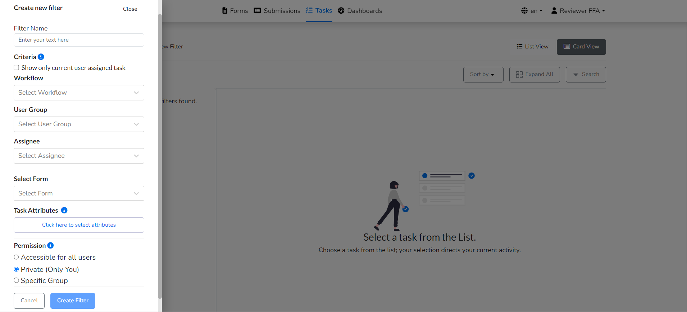
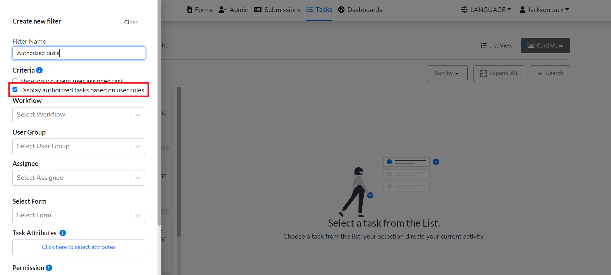
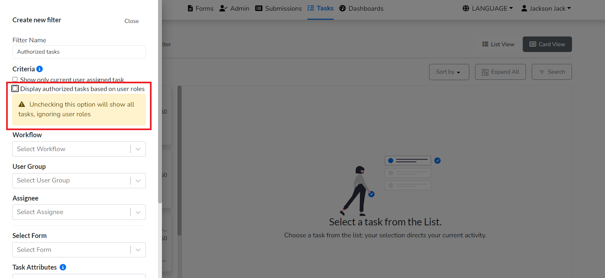

Task Filters
Previously, relying on Camunda for task filters required users to log in, but with the BPM Abstraction feature, they can now easily generate filters directly from the Task page. Let's walk through creating a new filter.
Create New filter
To create a new task filter, follow these steps:
- Click on the
Create new filterbutton on the left-hand side of the task page. - First enter filter name and then, users can access sections where they define criteria to refine task visibility and set permissions to control task access. This intuitive system enhances task organization and promotes a more efficient task management experience.

Criteria
Within the Criteria section user can choose any of the below options:
- Show only current user assigned task : This criteria ensures a focused perspective by displaying only the tasks assigned to the currently logged-in user. This means that individuals can effortlessly access and manage their own workload, streamlining their workflow.
- Show task based on logged user roles : This filter is based on user roles, allowing the system to dynamically showcase tasks based on the specific roles assigned to the logged-in user. For instance, if a user holds a reviewer role, the filter will exclusively present tasks designated for reviewer role users.
- Definition Key : This specific criteria allows users to display tasks according to the specified process definition key, which basically represents the name of the workflow. Users can easily extract the workflow name from the designer login and enter it into the filter, resulting in the display of all tasks linked with that specific definition key.
- Candidate Group : The candidate group criteria provides a more detailed approach by providing tasks connected with a certain candidate group. For instance, if the candidate group is defined as formsflow/formsflow-reviewer/clerk , the filter will display all tasks related to that specific group. This functionality is especially useful when tasks are arranged according to certain business processes or responsibilities.
- Assignee : The assignee filter allows users to focus on tasks assigned to a specified individual. For example, if the assigned user is formsflow-approver , the filter will exclusively display tasks designated for the formsflow-approver user.This feature ensures a targeted and effective task management approach in situations where tasks are precisely assigned to people with designated roles or expertise.




Note:This filter has the advantage of supporting the like operator, which allows users to input only a portion of the defining key, hence increasing flexibility and user comfort.


Permission
Users can choose any of the below Permissions while creating a filter. Private (Only You) will be selected by default.- Accessible for all users : This permission ensures that all users have access to the filters by making them generally available.
- Private (Only You) : This setting restricts access to the filters solely to the user who created them, ensuring privacy and exclusivity.
- Specific Group : With this option, filters can be shared only with a predefined group of users, providing selective access based on group membership.
Task attributes
Choose task attributes from the list, and they will appear in the task list view.